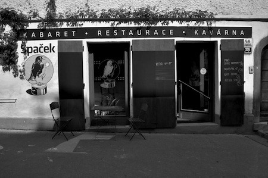
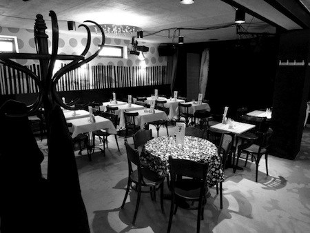

Venue
TypeShorts will take place in the Brno city centre, in café Kabaret Špaček.
Brno has an international airport served by several low-cost agencies (RyanAir, WizzAir, …) and it is well connected with international airports in Vienna, Prague, and Bratislava. It is also easily accessed by direct trains from Prague (~ 2.5 hours), Berlin (~ 7 hours), Vienna (2 hours), Katowice (3 hours), Warszaw (7 hours), or Bratislava (2 hours), …
Kabaret Špaček
Kabaret Špaček is a small non-smoking restaurant, café, and cabaret near the city centre and within a walking distance from the bus and train stations.. Learn more on their page.
 
Address:
Kopečná 46
Brno
Google maps
Eating and drinking elsewhere
We have prepared a Google map with our favourite eating and drinking places for you:
Food, coffee, beer, and wine in Brno
Design © TypeShorts, 2011–13.
Content © Respective speakers, 2011–13.